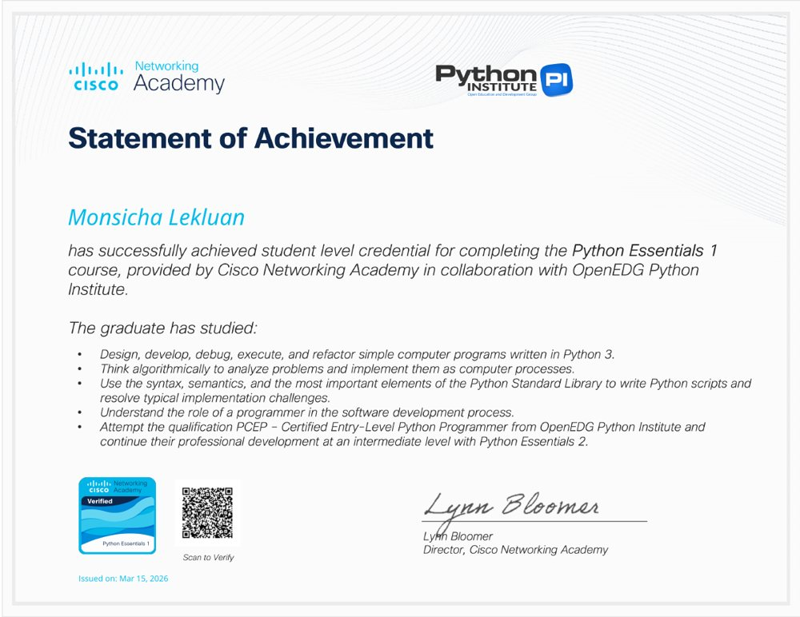
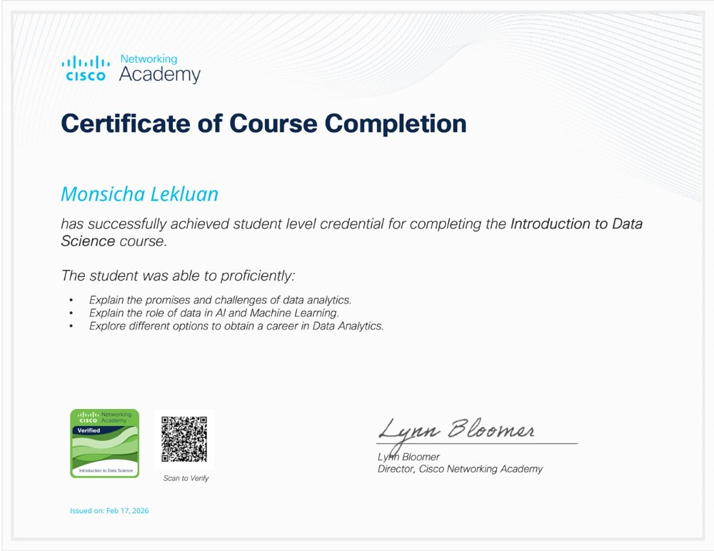
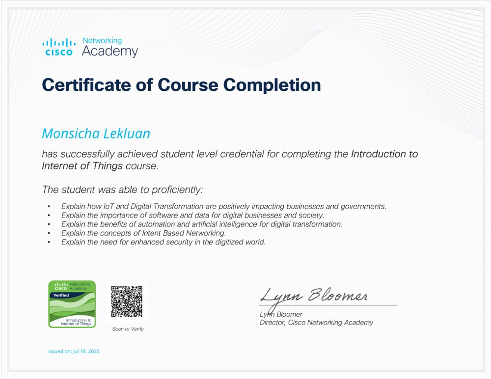
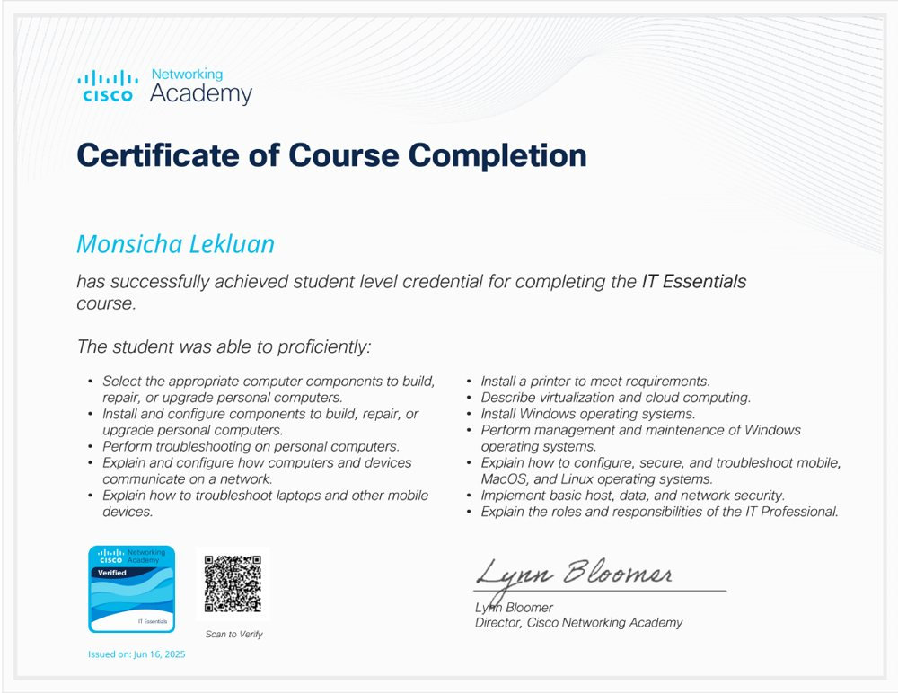

ใบรับรองและรางวัล Certificates & awards.
CISCO NETWORKING ACADEMY
หลักสูตรที่เรียนจบ Course completions.


Introduction to Data Science


Introduction to IoT


IT Essentials
รางวัลและกิจกรรม Awards & activities.

รางวัลชมเชย · เว็บไซต์สืบสานศิลปวัฒนธรรมไทย Honorable Mention · Thai Arts and Culture Website

Startup Thailand League 2025